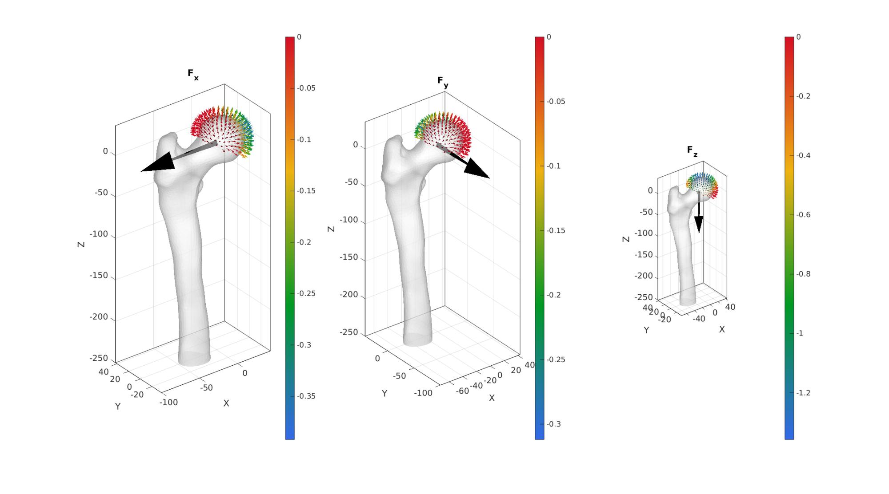
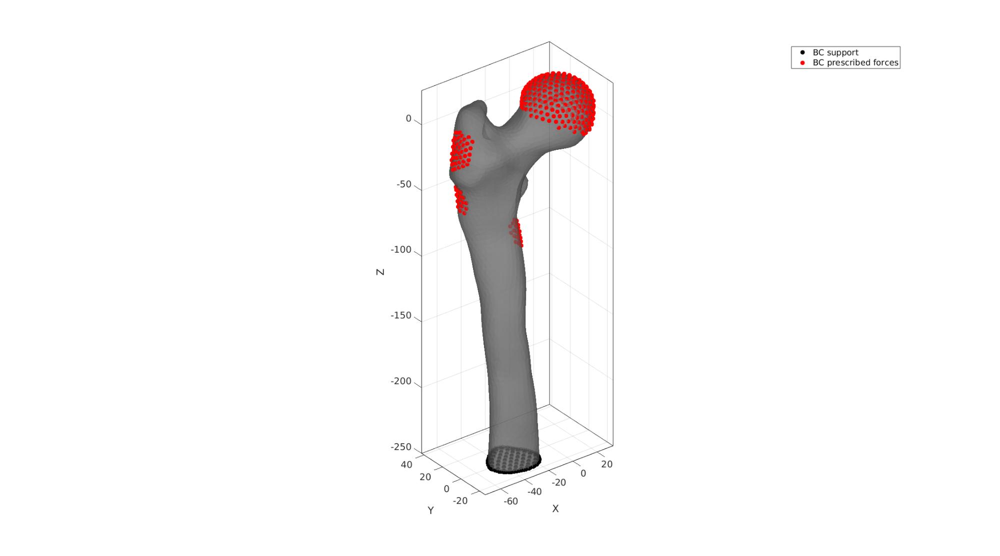
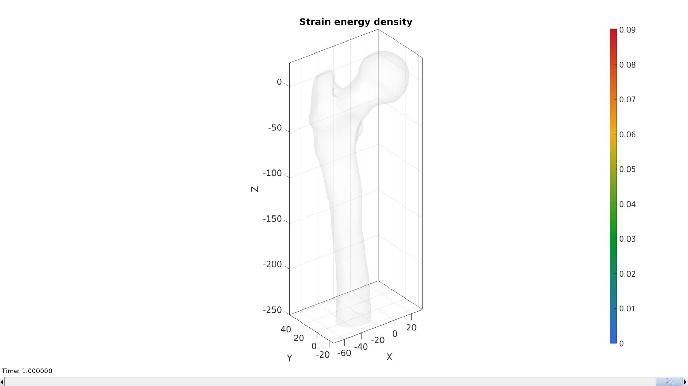

DEMO_febio_0062_femur_load_01
Below is a demonstration for:
- Building geometry femur bone
- Applying a load to the femur head
Contents
- Keywords
- Plot settings
- Control parameters
- Import bone surface model
- Scale and reorient
- Visualize bone surface
- Determining femur length and person's height
- Cut bone surface
- Visualize bone surface
- Mesh using tetgen
- Visualize interior point
- Define material regions in bone
- Visualizing solid mesh
- Find femoral head
- Work out force distribution on femoral head surface nodes
- Marking muscle locations
- Muscle force definition
- Defining prescribed forces
- Visualizing boundary conditions
- Defining the FEBio input structure
- Quick viewing of the FEBio input file structure
- Exporting the FEBio input file
- Running the FEBio analysis
- Import FEBio results
- Saving strain energy data for comparison in implant demo
Keywords
- febio_spec version 4.0
- febio, FEBio
- beam force loading
- force control boundary condition
- tetrahedral elements, tet4
- femur
- static, solid
- displacement logfile
- stress logfile
clear; close all; clc;
Plot settings
fontSize=20; faceAlpha1=0.8; markerSize=40; markerSize2=20; lineWidth=3;
Control parameters
% Path names defaultFolder = fileparts(fileparts(mfilename('fullpath'))); savePath=fullfile(defaultFolder,'data','temp'); pathNameSTL=fullfile(defaultFolder,'data','STL'); saveName_SED=fullfile(savePath,'SED_no_implant.mat'); % Defining file names febioFebFileNamePart='tempModel'; febioFebFileName=fullfile(savePath,[febioFebFileNamePart,'.feb']); %FEB file name febioLogFileName=[febioFebFileNamePart,'.txt']; %FEBio log file name febioLogFileName_disp=[febioFebFileNamePart,'_disp_out.txt']; %Log file name for exporting displacement febioLogFileName_force=[febioFebFileNamePart,'_force_out.txt']; %Log file name for exporting force febioLogFileName_stress=[febioFebFileNamePart,'_stress_out.txt']; %Log file name for exporting stresses febioLogFileName_strainEnergy=[febioFebFileNamePart,'_energy_out.txt']; %Log file name for exporting strain energy density %Geometric parameters distanceCut=250; %Distance from femur to cut bone at corticalThickness=3; %Thickness used for cortical material definition volumeFactor=2; %Factor to scale desired volume for interior elements w.r.t. boundary elements %Define applied force forceAbductor=[564.831 -132.696 704.511]; forceVastusLateralis_Walking=[-7.857 -161.505 -811.017]; forceVastusLateralis_StairClimbing=[-19.206 -195.552 -1,179.423]; forceVastusMedialis_StairClimbing=[-76.824 -345.708 -2,331.783]; forceVM_inactive=[0 0 0]; n=1; switch n case 1 forceVastusLateralis=forceVastusLateralis_Walking; forceVastusMedialis=forceVM_inactive; case 2 forceVastusLateralis=forceVastusLateralis_StairClimbing; forceVastusMedialis=forceVastusMedialis_StairClimbing; otherwise forceVastusLateralis=forceVastusLateralis_StairClimbing; forceVastusMedialis=forceVastusMedialis_StairClimbing; end % Distance markers and scaling factor zLevelWidthMeasure = -75; zLevelFCML = -395; scaleFactorSize=1; distanceMuscleAttachAbductor=15; distanceMuscleVastusLateralis=10; distanceMuscleAttachVastusMedialis=10; %Material parameters (MPa if spatial units are mm) % Cortical bone E_youngs1=17000; %Youngs modulus nu1=0.25; %Poissons ratio % Cancellous bone E_youngs2=1500; %Youngs modulus nu2=0.25; %Poissons ratio % FEA control settings numTimeSteps=10; %Number of time steps desired max_refs=25; %Max reforms max_ups=0; %Set to zero to use full-Newton iterations opt_iter=6; %Optimum number of iterations max_retries=5; %Maximum number of retires dtmin=(1/numTimeSteps)/100; %Minimum time step size dtmax=1/numTimeSteps; %Maximum time step size runMode='external'; %'external' or 'internal'
Import bone surface model
[stlStruct] = import_STL(fullfile(pathNameSTL,'femur_iso.stl')); F_bone=stlStruct.solidFaces{1}; %Faces V_bone=stlStruct.solidVertices{1}; %Vertices
Scale and reorient
V_bone=V_bone.*1000; %Scale to mm V_bone=V_bone.*scaleFactorSize; %Scale size further [F_bone,V_bone]=mergeVertices(F_bone,V_bone); % Merging nodes Q1=euler2DCM([0 0 0.065*pi]); V_bone=V_bone*Q1; Q2=euler2DCM([-0.5*pi 0 0]); V_bone=V_bone*Q2; Q3=euler2DCM([0 0 0.36*pi]); V_bone=V_bone*Q3;
Visualize bone surface
cFigure; hold on; gpatch(F_bone,V_bone,'w','k',1); % patchNormPlot(F_bone,V_bone) axisGeom; camlight headlight; drawnow;

Determining femur length and person's height
% The Estimation of Stature on the Basis of Measurements of the Femur - height % Estimating body mass and composition from proximal femur dimensions using dual energy x-ray absorptiometry - weight % P3 = [-15 20 -75]; % [~,indNode3]=minDist(P3,V_bone); femurLength = max(V_bone(:,3)) - min(V_bone(:,3)); %femur length [~,V_bone_slice,~,~,Eb]=triSurfSlice(F_bone,V_bone,[],[0 0 scaleFactorSize.*zLevelWidthMeasure],[0 0 1]); indSliceCurve=edgeListToCurve(Eb); V_slice_curve=V_bone_slice(indSliceCurve,:); sliceArea = polyarea(V_slice_curve(:,1),V_slice_curve(:,2)); subtrochanterMedLatDia = sqrt(sliceArea./(0.25*pi)); [~,V_bone_slice_bottom,~,~,Eb2]=triSurfSlice(F_bone,V_bone,[],[0 0 scaleFactorSize.*zLevelFCML],[0 0 1]); indSliceCurveBottom=edgeListToCurve(Eb2); V_slice_curve_bottom=V_bone_slice_bottom(indSliceCurveBottom,:); sliceAreaBottom = polyarea(V_slice_curve_bottom(:,1),V_slice_curve_bottom(:,1)); FCML = max(V_bone_slice_bottom(:,1)) - min(V_bone_slice_bottom(:,1)); %mediolateral breadth of the articular surface of the femoral condyles % subtrochanterMedLatDia = distND(V_bone(indNode3,:),V_bone(indNode4,:)); %subtrochanter medio-latreal diameter bodyHeight = 4*femurLength; bodyMass = 1.37 * (FCML-42.8); forceTotal=[-0.54 -0.32 -2.292].*bodyMass;
cFigure; hold on; gpatch(F_bone,V_bone,'w','none',0.5); plotV(V_bone_slice(indSliceCurve,:),'r-','LineWidth',5) plotV(V_bone_slice_bottom(indSliceCurveBottom,:),'r-','LineWidth',5) axisGeom; camlight headlight; drawnow;

Cut bone surface
%Slicing surface [F_bone,V_bone,~,logicSide,~]=triSurfSlice(F_bone,V_bone,[],[0 0 -distanceCut],[0 0 1]); F_bone=F_bone(logicSide==0,:); [F_bone,V_bone]=patchCleanUnused(F_bone,V_bone); Eb=patchBoundary(F_bone,V_bone); indCurve=edgeListToCurve(Eb); indCurve=indCurve(1:end-1); cparSmooth.n=5; cparSmooth.Method='HC'; [V_Eb_smooth]=patchSmooth(Eb,V_bone(:,[1 2]),[],cparSmooth); V_bone(indCurve,[1 2])=V_Eb_smooth(indCurve,:); cparSmooth.n=5; cparSmooth.Method='HC'; cparSmooth.RigidConstraints=indCurve; [V_bone]=patchSmooth(F_bone,V_bone,[],cparSmooth); pointSpacing=mean(patchEdgeLengths(F_bone,V_bone)); [F_bone2,V_bone2]=regionTriMesh3D({V_bone(indCurve,:)},pointSpacing,0,'linear'); if dot(mean(patchNormal(F_bone2,V_bone2)),[0 0 1])>0 F_bone2=fliplr(F_bone2); end [F_bone,V_bone,C_bone]=joinElementSets({F_bone,F_bone2},{V_bone,V_bone2}); [F_bone,V_bone]=mergeVertices(F_bone,V_bone);
Warning: Second input (vertices) no longer required. Update code to avoid future error.
Visualize bone surface
cFigure; hold on; gpatch(F_bone,V_bone,C_bone,'k',1); patchNormPlot(F_bone,V_bone); axisGeom; camlight headlight; drawnow;
Mesh using tetgen
%Find interior point
V_inner_bone=getInnerPoint(F_bone,V_bone);
Visualize interior point
cFigure; hold on; gpatch(F_bone,V_bone,'w','none',0.5); plotV(V_inner_bone,'r.','MarkerSize',25) axisGeom; camlight headlight; drawnow;

Regional mesh volume parameter
tetVolume=tetVolMeanEst(F_bone,V_bone); %Volume for regular tets tetGenStruct.stringOpt='-pq1.2AaY'; tetGenStruct.Faces=F_bone; tetGenStruct.Nodes=V_bone; tetGenStruct.holePoints=[]; tetGenStruct.faceBoundaryMarker=C_bone; %Face boundary markers tetGenStruct.regionPoints=V_inner_bone; %region points tetGenStruct.regionA=tetVolume*volumeFactor; [meshOutput]=runTetGen(tetGenStruct); %Run tetGen % Access elements, nodes, and boundary faces E=meshOutput.elements; V=meshOutput.nodes; Fb=meshOutput.facesBoundary; Cb=meshOutput.boundaryMarker; CE=meshOutput.elementMaterialID;
%%%%%%%%%%%%%%%%%%%%%%%%%%%%%%%%%%%%%%%%%%%%% --- TETGEN Tetrahedral meshing --- 29-May-2023 10:36:56 %%%%%%%%%%%%%%%%%%%%%%%%%%%%%%%%%%%%%%%%%%%%% --- Writing SMESH file --- 29-May-2023 10:36:56 ----> Adding node field ----> Adding facet field ----> Adding holes specification ----> Adding region specification --- Done --- 29-May-2023 10:36:56 --- Running TetGen to mesh input boundary--- 29-May-2023 10:36:56 Opening /home/kevin/DATA/Code/matlab/GIBBON/data/temp/temp.smesh. Delaunizing vertices... Delaunay seconds: 0.009426 Creating surface mesh ... Surface mesh seconds: 0.002424 Recovering boundaries... Boundary recovery seconds: 0.00449 Removing exterior tetrahedra ... Spreading region attributes. Exterior tets removal seconds: 0.002639 Recovering Delaunayness... Delaunay recovery seconds: 0.002175 Refining mesh... 3940 insertions, added 3883 points, 119011 tetrahedra in queue. 1312 insertions, added 1213 points, 44212 tetrahedra in queue. Refinement seconds: 0.063345 Smoothing vertices... Mesh smoothing seconds: 0.121055 Improving mesh... Mesh improvement seconds: 0.004366 Writing /home/kevin/DATA/Code/matlab/GIBBON/data/temp/temp.1.node. Writing /home/kevin/DATA/Code/matlab/GIBBON/data/temp/temp.1.ele. Writing /home/kevin/DATA/Code/matlab/GIBBON/data/temp/temp.1.face. Writing /home/kevin/DATA/Code/matlab/GIBBON/data/temp/temp.1.edge. Output seconds: 0.018217 Total running seconds: 0.228312 Statistics: Input points: 2956 Input facets: 5908 Input segments: 8862 Input holes: 0 Input regions: 1 Mesh points: 8138 Mesh tetrahedra: 40574 Mesh faces: 84102 Mesh faces on exterior boundary: 5908 Mesh faces on input facets: 5908 Mesh edges on input segments: 8862 Steiner points inside domain: 5182 --- Done --- 29-May-2023 10:36:56 %%%%%%%%%%%%%%%%%%%%%%%%%%%%%%%%%%%%%%%%%%%%% --- Importing TetGen files --- 29-May-2023 10:36:56 --- Done --- 29-May-2023 10:36:56
Define material regions in bone
indBoundary=unique(Fb(Cb==1,:)); DE=minDist(V,V(indBoundary,:)); logicCorticalNodes=DE<=corticalThickness; logicCorticalElements=any(logicCorticalNodes(E),2); logicCancellousElements=~logicCorticalElements; E1=E(logicCorticalElements,:); E2=E(logicCancellousElements,:); E=[E1;E2]; elementMaterialID=[ones(size(E1,1),1);2*ones(size(E2,1),1);]; meshOutput.elements=E; meshOutput.elementMaterialID=elementMaterialID;
Visualizing solid mesh
hFig=cFigure; hold on;
optionStruct.hFig=hFig;
meshView(meshOutput,optionStruct);
axisGeom;
drawnow;

Find femoral head
w=100; f=[1 2 3 4]; v=w*[-1 -1 0; -1 1 0; 1 1 0; 1 -1 0]; p=[0 0 0]; Q=euler2DCM([0 (150/180)*pi 0]); v=v*Q; v=v+p; Vr=V*Q'; Vr=Vr+p; logicHeadNodes=Vr(:,3)<0; logicHeadFaces=all(logicHeadNodes(Fb),2); bcPrescribeList_head=unique(Fb(logicHeadFaces,:));
Visualize femoral head nodes for prescribed force boundary conditions
cFigure; hold on; gpatch(Fb,V,'w','k',1); gpatch(f,v,'r','k',0.5); plotV(V(bcPrescribeList_head,:),'r.','markerSize',15) axisGeom; camlight headlight; drawnow;
Work out force distribution on femoral head surface nodes
This is based on surface normal directions. Forces are assumed to only be able to act in a compressive sense on the bone.
[~,~,N]=patchNormal(fliplr(Fb),V); %Nodal normal directions FX=[forceTotal(1) 0 0]; %X force vector FY=[0 forceTotal(2) 0]; %Y force vector FZ=[0 0 forceTotal(3)]; %Z force vector wx=dot(N(bcPrescribeList_head,:),FX(ones(numel(bcPrescribeList_head),1),:),2); wy=dot(N(bcPrescribeList_head,:),FY(ones(numel(bcPrescribeList_head),1),:),2); wz=dot(N(bcPrescribeList_head,:),FZ(ones(numel(bcPrescribeList_head),1),:),2); %Force zero wx(wx>0)=0; wy(wy>0)=0; wz(wz>0)=0; force_X=forceTotal(1).*ones(numel(bcPrescribeList_head),1).*wx; force_Y=forceTotal(2).*ones(numel(bcPrescribeList_head),1).*wy; force_Z=forceTotal(3).*ones(numel(bcPrescribeList_head),1).*wz; force_X=force_X./sum(force_X(:)); %sum now equal to 1 force_X=force_X.*forceTotal(1); %sum now equal to desired force_Y=force_Y./sum(force_Y(:)); %sum now equal to 1 force_Y=force_Y.*forceTotal(2); %sum now equal to desired force_Z=force_Z./sum(force_Z(:)); %sum now equal to 1 force_Z=force_Z.*forceTotal(3); %sum now equal to desired force_head=[force_X(:) force_Y(:) force_Z(:)];
cFigure; subplot(1,3,1);hold on; title('F_x'); gpatch(Fb,V,'w','none',0.5); quiverVec([0 0 0],FX,100,'k'); % scatterV(V(indicesHeadNodes,:),15) quiverVec(V(bcPrescribeList_head,:),N(bcPrescribeList_head,:),10,force_X); axisGeom; camlight headlight; colormap(gca,gjet(250)); colorbar; subplot(1,3,2);hold on; title('F_y'); gpatch(Fb,V,'w','none',0.5); quiverVec([0 0 0],FY,100,'k'); % scatterV(V(indicesHeadNodes,:),15) quiverVec(V(bcPrescribeList_head,:),N(bcPrescribeList_head,:),10,force_Y); axisGeom; camlight headlight; colormap(gca,gjet(250)); colorbar; subplot(1,3,3);hold on; title('F_z'); gpatch(Fb,V,'w','none',0.5); quiverVec([0 0 0],FZ,100,'k'); % scatterV(V(indicesHeadNodes,:),15) quiverVec(V(bcPrescribeList_head,:),N(bcPrescribeList_head,:),10,force_Z); axisGeom; camlight headlight; colormap(gca,gjet(250)); colorbar; drawnow;
Marking muscle locations
P_abductor_find = [-69.771045288206111 8.185179717034659 -5.575329878303917]; %Coordinate at centre of muscle attachment [~,indAbductor]=minDist(P_abductor_find,V); %Node number of point at centre of attachment dAbductor=meshDistMarch(Fb,V,indAbductor); %Distance (on mesh) from attachement centre bcPrescibeList_abductor=find(dAbductor<=distanceMuscleAttachAbductor); %Node numbers for attachment site P_VastusLateralis_find = [-58.763839901506827 19.145444610053566 -51.005278396808819]; %Coordinate at centre of muscle attachment [~,indVastusLateralis]=minDist(P_VastusLateralis_find,V); %Node number of point at centre of attachment dVastusLateralis=meshDistMarch(Fb,V,indVastusLateralis); %Distance (on mesh) from attachement centre bcPrescibeList_VastusLateralis=find(dVastusLateralis<=distanceMuscleVastusLateralis); %Node numbers for attachment site P_VastusMedialis_find = [-18.533631492778085 9.501312355952791 -85.666499329588035]; %Coordinate at centre of muscle attachment [~,indVastusMedialis]=minDist(P_VastusMedialis_find,V); %Node number of point at centre of attachment dVastusMedialis=meshDistMarch(Fb,V,indVastusMedialis); %Distance (on mesh) from attachement centre bcPrescibeList_VastusMedialis=find(dVastusMedialis<=distanceMuscleAttachVastusMedialis); %Node numbers for attachment site
Muscle force definition
forceAbductor_distributed=forceAbductor.*ones(numel(bcPrescibeList_abductor),1)./numel(bcPrescibeList_abductor); forceVastusLateralis_distributed=forceVastusLateralis.*ones(numel(bcPrescibeList_VastusLateralis),1)./numel(bcPrescibeList_VastusLateralis); forceVastusMedialis_distributed=forceVastusMedialis.*ones(numel(bcPrescibeList_VastusMedialis),1)./numel(bcPrescibeList_VastusMedialis);
Defining prescribed forces
bcPrescribeList=[bcPrescribeList_head(:);... bcPrescibeList_abductor(:);... bcPrescibeList_VastusLateralis(:);... bcPrescibeList_VastusMedialis(:)]; forceData=[force_head;... forceAbductor_distributed;... forceVastusLateralis_distributed;... forceVastusMedialis_distributed];
cFigure; subplot(1,3,1);hold on; title('F_x'); gpatch(Fb,V,'w','none',0.5); quiverVec(V(bcPrescribeList,:),forceData,10,forceData(:,1)); axisGeom; camlight headlight; colormap(gca,gjet(250)); colorbar; subplot(1,3,2);hold on; title('F_y'); gpatch(Fb,V,'w','none',0.5); quiverVec(V(bcPrescribeList,:),forceData,10,forceData(:,2)); axisGeom; camlight headlight; colormap(gca,gjet(250)); colorbar; subplot(1,3,3);hold on; title('F_z'); gpatch(Fb,V,'w','none',0.5); quiverVec(V(bcPrescribeList,:),forceData,10,forceData(:,3)); axisGeom; camlight headlight; colormap(gca,gjet(250)); colorbar; drawnow;
Visualizing boundary conditions
F_bottomSupport=Fb(Cb==2,:); bcSupportList=unique(F_bottomSupport(:)); cFigure; hold on; gpatch(Fb,V,'kw','none',0.7); hl(1)=plotV(V(bcSupportList,:),'k.','MarkerSize',25); hl(2)=plotV(V(bcPrescribeList,:),'r.','MarkerSize',25); legend(hl,{'BC support','BC prescribed forces'}); axisGeom; camlight headlight; drawnow;
Defining the FEBio input structure
See also febioStructTemplate and febioStruct2xml and the FEBio user manual.
%Get a template with default settings [febio_spec]=febioStructTemplate; %febio_spec version febio_spec.ATTR.version='4.0'; %Module section febio_spec.Module.ATTR.type='solid'; %Control section febio_spec.Control.analysis='STATIC'; febio_spec.Control.time_steps=numTimeSteps; febio_spec.Control.step_size=1/numTimeSteps; febio_spec.Control.solver.max_refs=max_refs; febio_spec.Control.solver.qn_method.max_ups=max_ups; febio_spec.Control.time_stepper.dtmin=dtmin; febio_spec.Control.time_stepper.dtmax=dtmax; febio_spec.Control.time_stepper.max_retries=max_retries; febio_spec.Control.time_stepper.opt_iter=opt_iter; %Material section materialName1='Material1'; febio_spec.Material.material{1}.ATTR.name=materialName1; febio_spec.Material.material{1}.ATTR.type='neo-Hookean'; febio_spec.Material.material{1}.ATTR.id=1; febio_spec.Material.material{1}.E=E_youngs1; febio_spec.Material.material{1}.v=nu1; materialName2='Material2'; febio_spec.Material.material{2}.ATTR.name=materialName2; febio_spec.Material.material{2}.ATTR.type='neo-Hookean'; febio_spec.Material.material{2}.ATTR.id=2; febio_spec.Material.material{2}.E=E_youngs2; febio_spec.Material.material{2}.v=nu2; % Mesh section % -> Nodes febio_spec.Mesh.Nodes{1}.ATTR.name='Object1'; %The node set name febio_spec.Mesh.Nodes{1}.node.ATTR.id=(1:size(V,1))'; %The node id's febio_spec.Mesh.Nodes{1}.node.VAL=V; %The nodel coordinates % -> Elements partName1='CorticalBone'; febio_spec.Mesh.Elements{1}.ATTR.name=partName1; %Name of this part febio_spec.Mesh.Elements{1}.ATTR.type='tet4'; %Element type febio_spec.Mesh.Elements{1}.elem.ATTR.id=(1:1:size(E1,1))'; %Element id's febio_spec.Mesh.Elements{1}.elem.VAL=E1; %The element matrix partName2='CancellousBone'; febio_spec.Mesh.Elements{2}.ATTR.name=partName2; %Name of this part febio_spec.Mesh.Elements{2}.ATTR.type='tet4'; %Element type febio_spec.Mesh.Elements{2}.elem.ATTR.id=size(E1,1)+(1:1:size(E2,1))'; %Element id's febio_spec.Mesh.Elements{2}.elem.VAL=E2; %The element matrix % -> NodeSets nodeSetName1='bcSupportList'; febio_spec.Mesh.NodeSet{1}.ATTR.name=nodeSetName1; febio_spec.Mesh.NodeSet{1}.VAL=mrow(bcSupportList); nodeSetName2='bcPrescribeList'; febio_spec.Mesh.NodeSet{2}.ATTR.name=nodeSetName2; febio_spec.Mesh.NodeSet{2}.VAL=mrow(bcPrescribeList); %MeshDomains section febio_spec.MeshDomains.SolidDomain{1}.ATTR.name=partName1; febio_spec.MeshDomains.SolidDomain{1}.ATTR.mat=materialName1; febio_spec.MeshDomains.SolidDomain{2}.ATTR.name=partName2; febio_spec.MeshDomains.SolidDomain{2}.ATTR.mat=materialName2; %Boundary condition section % -> Fix boundary conditions febio_spec.Boundary.bc{1}.ATTR.name='zero_displacement_xyz'; febio_spec.Boundary.bc{1}.ATTR.type='zero displacement'; febio_spec.Boundary.bc{1}.ATTR.node_set=nodeSetName1; febio_spec.Boundary.bc{1}.x_dof=1; febio_spec.Boundary.bc{1}.y_dof=1; febio_spec.Boundary.bc{1}.z_dof=1; %MeshData secion %-> Node data loadDataName1='nodal_forces'; febio_spec.MeshData.NodeData{1}.ATTR.name=loadDataName1; febio_spec.MeshData.NodeData{1}.ATTR.node_set=nodeSetName2; febio_spec.MeshData.NodeData{1}.ATTR.data_type='vec3'; febio_spec.MeshData.NodeData{1}.node.ATTR.lid=(1:1:numel(bcPrescribeList))'; febio_spec.MeshData.NodeData{1}.node.VAL=forceData; %Loads section % -> Prescribed nodal forces febio_spec.Loads.nodal_load{1}.ATTR.name='PrescribedForce'; febio_spec.Loads.nodal_load{1}.ATTR.type='nodal_force'; febio_spec.Loads.nodal_load{1}.ATTR.node_set=nodeSetName2; febio_spec.Loads.nodal_load{1}.value.ATTR.lc=1; febio_spec.Loads.nodal_load{1}.value.ATTR.type='map'; febio_spec.Loads.nodal_load{1}.value.VAL=loadDataName1; %LoadData section % -> load_controller febio_spec.LoadData.load_controller{1}.ATTR.name='LC_1'; febio_spec.LoadData.load_controller{1}.ATTR.id=1; febio_spec.LoadData.load_controller{1}.ATTR.type='loadcurve'; febio_spec.LoadData.load_controller{1}.interpolate='LINEAR'; %febio_spec.LoadData.load_controller{1}.extend='CONSTANT'; febio_spec.LoadData.load_controller{1}.points.pt.VAL=[0 0; 1 1]; %Output section % -> log file febio_spec.Output.logfile.ATTR.file=febioLogFileName; febio_spec.Output.logfile.node_data{1}.ATTR.file=febioLogFileName_disp; febio_spec.Output.logfile.node_data{1}.ATTR.data='ux;uy;uz'; febio_spec.Output.logfile.node_data{1}.ATTR.delim=','; febio_spec.Output.logfile.element_data{1}.ATTR.file=febioLogFileName_stress; febio_spec.Output.logfile.element_data{1}.ATTR.data='s1;s2;s3'; febio_spec.Output.logfile.element_data{1}.ATTR.delim=','; febio_spec.Output.logfile.element_data{2}.ATTR.file=febioLogFileName_strainEnergy; febio_spec.Output.logfile.element_data{2}.ATTR.data='sed'; febio_spec.Output.logfile.element_data{2}.ATTR.delim=','; % Plotfile section febio_spec.Output.plotfile.compression=0;
Quick viewing of the FEBio input file structure
The febView function can be used to view the xml structure in a MATLAB figure window.
febView(febio_spec); %Viewing the febio file
Exporting the FEBio input file
Exporting the febio_spec structure to an FEBio input file is done using the febioStruct2xml function.
febioStruct2xml(febio_spec,febioFebFileName); %Exporting to file and domNode
Running the FEBio analysis
To run the analysis defined by the created FEBio input file the runMonitorFEBio function is used. The input for this function is a structure defining job settings e.g. the FEBio input file name. The optional output runFlag informs the user if the analysis was run succesfully.
febioAnalysis.run_filename=febioFebFileName; %The input file name febioAnalysis.run_logname=febioLogFileName; %The name for the log file febioAnalysis.disp_on=1; %Display information on the command window febioAnalysis.runMode=runMode; [runFlag]=runMonitorFEBio(febioAnalysis);%START FEBio NOW!!!!!!!!
%%%%%%%%%%%%%%%%%%%%%%%%%%%%%%%%%%%%%%%%%%%%%%%%%%%%%%%%%%%%%%%%%%%%%%%%%%%
--------> RUNNING/MONITORING FEBIO JOB <-------- 29-May-2023 10:37:03
FEBio path: /home/kevin/FEBioStudio/bin/febio4
# Attempt removal of existing log files 29-May-2023 10:37:03
* Removal succesful 29-May-2023 10:37:03
# Attempt removal of existing .xplt files 29-May-2023 10:37:03
* Removal succesful 29-May-2023 10:37:03
# Starting FEBio... 29-May-2023 10:37:03
Max. total analysis time is: Inf s
* Waiting for log file creation 29-May-2023 10:37:03
Max. wait time: 30 s
* Log file found. 29-May-2023 10:37:03
# Parsing log file... 29-May-2023 10:37:03
number of iterations : 3 29-May-2023 10:37:04
number of reformations : 3 29-May-2023 10:37:04
------- converged at time : 0.1 29-May-2023 10:37:04
number of iterations : 3 29-May-2023 10:37:04
number of reformations : 3 29-May-2023 10:37:04
------- converged at time : 0.2 29-May-2023 10:37:04
number of iterations : 3 29-May-2023 10:37:05
number of reformations : 3 29-May-2023 10:37:05
------- converged at time : 0.3 29-May-2023 10:37:05
number of reformations : 3 29-May-2023 10:37:06
------- converged at time : 0.4 29-May-2023 10:37:06
number of iterations : 3 29-May-2023 10:37:06
number of reformations : 3 29-May-2023 10:37:06
------- converged at time : 0.5 29-May-2023 10:37:06
number of iterations : 3 29-May-2023 10:37:08
number of reformations : 3 29-May-2023 10:37:08
------- converged at time : 0.6 29-May-2023 10:37:08
number of iterations : 3 29-May-2023 10:37:08
number of reformations : 3 29-May-2023 10:37:08
------- converged at time : 0.7 29-May-2023 10:37:08
number of iterations : 3 29-May-2023 10:37:09
number of reformations : 3 29-May-2023 10:37:09
------- converged at time : 0.8 29-May-2023 10:37:09
number of iterations : 3 29-May-2023 10:37:09
number of reformations : 3 29-May-2023 10:37:09
------- converged at time : 0.9 29-May-2023 10:37:09
number of iterations : 3 29-May-2023 10:37:10
number of reformations : 3 29-May-2023 10:37:10
------- converged at time : 1 29-May-2023 10:37:10
Elapsed time : 0:00:07 29-May-2023 10:37:10
N O R M A L T E R M I N A T I O N
# Done 29-May-2023 10:37:10
%%%%%%%%%%%%%%%%%%%%%%%%%%%%%%%%%%%%%%%%%%%%%%%%%%%%%%%%%%%%%%%%%%%%%%%%%%%
Import FEBio results
if runFlag==1 %i.e. a succesful run
Importing nodal displacements from a log file
dataStruct=importFEBio_logfile(fullfile(savePath,febioLogFileName_disp),0,1);
%Access data
N_disp_mat=dataStruct.data; %Displacement
timeVec=dataStruct.time; %Time
%Create deformed coordinate set
V_DEF=N_disp_mat+repmat(V,[1 1 size(N_disp_mat,3)]);
Importing element strain energies from a log file
dataStruct=importFEBio_logfile(fullfile(savePath,febioLogFileName_strainEnergy),0,1); %Element strain energy %Access data E_energy=dataStruct.data;
Saving strain energy data for comparison in implant demo
%Element centre coordinates VE=patchCentre(E,V); %Construct interpolation function interpFuncEnergy=scatteredInterpolant(VE,E_energy(:,:,end),'natural','linear'); %Store components in structure outputStruct.SED=E_energy; outputStruct.elements=E; outputStruct.nodes=V; outputStruct.boundaryFaces=Fb; outputStruct.elementCenters=VE; outputStruct.interpFuncEnergy=interpFuncEnergy; %Save structure save(saveName_SED,'-struct','outputStruct');
C_data=E_energy(:,:,end);
n=[0 1 0]; %Normal direction to plane
P=mean(V,1); %Point on plane
[logicAt]=meshCleave(E,V,P,n);
% Get faces and matching color data for visualization
[F_cleave,CF_cleave]=element2patch(E(logicAt,:),C_data(logicAt));
hf=cFigure; hold on;
title('Strain energy density');
gpatch(Fb,V,'w','none',0.1); %Add graphics object to animate
hp1=gpatch(F_cleave,V,CF_cleave,'k',1);
axisGeom(gca,fontSize);
colormap(gjet(250));
caxis([0 max(C_data)]/2);
colorbar; axis manual;
camlight headligth;
gdrawnow;
nSteps=25; %Number of animation steps
%Create the time vector
animStruct.Time=linspace(0,1,nSteps);
%The vector lengths
y=linspace(min(V(:,2)),max(V(:,2)),nSteps);
for q=1:1:nSteps
%Get logic for slice of elements
logicAt=meshCleave(E,V,[0 y(q) 0],n,[1 0]);
% Get faces and matching color data for cleaves elements
[F_cleave,CF_cleave]=element2patch(E(logicAt,:),C_data(logicAt));
%Set entries in animation structure
animStruct.Handles{q}=[hp1 hp1]; %Handles of objects to animate
animStruct.Props{q}={'Faces','CData'}; %Properties of objects to animate
animStruct.Set{q}={F_cleave,CF_cleave}; %Property values for to set in order to animate
end
anim8(hf,animStruct);
 Plotting the simulated results using anim8 to visualize and animate deformations
[CV]=faceToVertexMeasure(E,V,E_energy(:,:,end));
% Create basic view and store graphics handle to initiate animation
hf=cFigure; %Open figure
title('Strain energy density')
gtitle([febioFebFileNamePart,': Press play to animate']);
hp1=gpatch(Fb,V_DEF(:,:,end),CV,'k',1); %Add graphics object to animate
hp1.FaceColor='Interp';
axisGeom(gca,fontSize);
colormap(gjet(250)); colorbar;
clim([0 max(E_energy(:))/25]);
axis(axisLim(V_DEF)); %Set axis limits statically
camlight headlight;
% Set up animation features
animStruct.Time=timeVec; %The time vector
for qt=1:1:size(N_disp_mat,3) %Loop over time increments
[CV]=faceToVertexMeasure(E,V,E_energy(:,:,qt));
%Set entries in animation structure
animStruct.Handles{qt}=[hp1 hp1]; %Handles of objects to animate
animStruct.Props{qt}={'Vertices','CData'}; %Properties of objects to animate
animStruct.Set{qt}={V_DEF(:,:,qt),CV}; %Property values for to set in order to animate
end
anim8(hf,animStruct); %Initiate animation feature
drawnow;
end
GIBBON footer text
License: https://github.com/gibbonCode/GIBBON/blob/master/LICENSE
GIBBON: The Geometry and Image-based Bioengineering add-On. A toolbox for image segmentation, image-based modeling, meshing, and finite element analysis.
Copyright (C) 2006-2023 Kevin Mattheus Moerman and the GIBBON contributors
This program is free software: you can redistribute it and/or modify it under the terms of the GNU General Public License as published by the Free Software Foundation, either version 3 of the License, or (at your option) any later version.
This program is distributed in the hope that it will be useful, but WITHOUT ANY WARRANTY; without even the implied warranty of MERCHANTABILITY or FITNESS FOR A PARTICULAR PURPOSE. See the GNU General Public License for more details.
You should have received a copy of the GNU General Public License along with this program. If not, see http://www.gnu.org/licenses/.